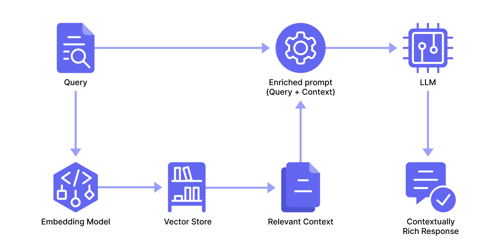

RAG Application: Benefits, Challenges & How to Build One¶
Retrieval augmented generation (RAG) is a workflow that incorporates real-time information retrieval into AI-assisted outputs.
The retrieved information gives the language model added context, allowing it to generate responses that are factual, up-to-date, and domain specific, thereby reducing the risk of misinformation or hallucinated content.
Hallucinations are LLM responses that sound plausible but are wrong, and the risk of these occurring is very real. This is due to a variety of reasons, not least because large language models rely on pre-trained data that may be outdated, incomplete, or irrelevant to the specific context of a query.
This limitation is more pronounced in domains like healthcare, finance, or legal compliance, where the details of the background information need to be correct to be useful.
RAG, however, keeps responses anchored in reality, mitigating the chances of inaccuracies. Its found in an increasing number of generative AI applications like:
- A customer chatbot to intelligently extract information from relevant knowledge base articles.
- Healthcare to provide evidence-based medical advice.
- Legal research to retrieve relevant case law and regulations.
- Personalized education platforms to provide up-to-date answers tailored to customers specific questions and needs.
- Financial advisory tools to leverage timely market data for better decision-making.
In this article, we explain how RAG works and list its challenges. We also show an example of building an application using both LlamaIndex and Mirascope, our lightweight toolkit for building with LLMs.
We use LlamaIndex for data ingestion, indexing, and retrieval, while leveraging Mirascopes straightforward and Pythonic approach to prompting.
How RAG Works¶
A RAG application has three ingredients:
- A user query thats usually specific, context sensitive, or specialized.
- A knowledge base one that contains the context needed for the users queries. If youre a car company, think a library of vehicle manufacturing work instructions that you want staff to easily access.
- An enriched prompt thats grounded in the context from the knowledge base.
- An LLM that receives the prompt and provides a response thats precise, relevant, and personalized to the users query.
To inject prompts with such tailored context on the fly, youll need a system that figures out which data to pull from the knowledge base and then integrates this into the LLMs workflow.
Most RAG systems use the following pipeline:
- They ingest and split the data up to prepare it for efficient storage and eventual recall.
- They transform the data into a format thats usable for storage and indexing, then store it.
- When the user sends a query, they match it with relevant content from storage and send it along with the query to the LLM.

Below, we describe the process in more detail:
1. Preprocess the Data¶
As a first step, you load (usually unstructured and domain-specific) knowledge sources into the application and then divide it into chunks.
Given that data orchestration drives the end-to-end process in RAG applications, many developers use frameworks like LlamaIndex to manage the end-to-end pipeline, from ingestion to delivery of LLM responses.
Such frameworks typically offer loaders for almost any file type, like PDF, Word, PowerPoint, and others. They also support ingestion workflows with web scrapers for online content, database connectors for structured data sources, API connectors, etc.
After the data is loaded, a parser then extracts structured information to organize and index it for efficient retrieval.
Additional preprocessing and refinement steps can be taken to improve the datas quality, such as eliminating noise, duplicates, and irrelevant information.
The data is then split into chunks to ensure compatibility with token limits imposed by language models.
You can define chunk sizes in different ways, depending on how you want to balance the efficiency of the retrieval system with semantic clarity:
- You can divide the data into equally sized portions based on character or token count for efficient processing. But this can break logical units of meaning, such as sentences or paragraphs, and lead to fragmented or less coherent context retrieval.
- An alternative is to split the data semantically, based on its natural structure of sentences, paragraphs, etc. This prioritizes the meaning and logical flow of the information since each chunk would contain a complete idea or concept, which can lead to more coherent and contextually relevant retrievals. But this can also introduce inefficiencies, such as uneven chunk sizes and potential overlap between chunks, making storage and retrieval more complex.
2. Embed and Store the Data¶
You then use an embedding model to transform each chunk into a numerical representation of itself (known as a vector or embedding) for optimized storage and retrieval in a vector database.
Note that vectors arent the only representation for chunks that can be used in RAG. Some implementations use other techniques like document stores, which may also rely on algorithms like keyword-based search or metadata indexing for retrieval.
Vectors are generally of fixed size regardless of the length of the input chunk. These capture the semantic meaning of the data and enable the system to efficiently compare, search, and retrieve relevant information based on similarity (more on that in the next section).
Many language model providers like Mistral and OpenAI offer their own embedding models to ensure compatibility with commonly used vector databases, such as Pinecone, Chroma, Watsonx.ai, and others.
3. Generate Answers with Retrieved Context¶
In order to successfully extract the most relevant context for the query, the app needs to ensure the query is in the same format as the stored information for an apples-to-apples comparison.
So if the application uses a vector store, it typically converts the query into a vector as well.
A similarity search can be effective for finding content thats semantically aligned with the users query. In the case of vectors, such searches can use mathematical functions like cosine similarity or Euclidean distance to rank chunks by their relevance to the query and retrieve the top matches.
These matches are selected as the context to send alongside the users query to create an enriched prompt that enables the LLM usually trained on generic public data to produce a factual and specific response.
4 Challenges in Building a RAG Application¶
Although RAG as a concept dates back to early question-answering systems, the current architecture based on language models presents a number of technical challenges, especially in production environments.
Below, we briefly summarize a few of these:
Challenge #1: Dealing with Noise¶
Noise which is irrelevant or extraneous information that inadvertently gets used as context in LLM responses can negatively impact a RAG pipeline. Similar to how noise in a dataset can impact model training in machine learning, noise can lead to inaccurate or incomplete answers being generated by the language model.
A lot of the time this arises from poor preprocessing, like improperly handled HTML tags, extraneous formatting, special characters or symbols, and others.
Suboptimal chunking strategies, like inappropriate fixed-size chunking, may also be a culprit, and can lead to contextual fragmentation and ambiguity in retrieved chunks.
To mitigate noise, care should be taken to remove or correct irrelevant information before chunking and storing the data.
Chunk sizes should be thoughtfully chosen to strike a balance between preserving semantic coherence and maintaining retrieval granularity, ensuring that each chunk contains a meaningful and self-contained portion of context.
Challenge #2: Retrieval Complexity in Handling Large Document Sets¶
Searching over hundreds of thousands, or millions of embeddings can increase the likelihood of irrelevant information being extracted, since:
- Vector-based similarity searches can prioritize less relevant chunks when many documents share overlapping features since their embeddings cluster closely in vector space leading to retrievals based on general similarities rather than query-specific relevance.
- Irrelevant or loosely related chunks can consume input tokens, reducing the space available for more relevant information and ultimately reducing the quality of the generated response.
To mitigate this, you can use:
- Metadata filters based on predefined criteria, to narrow down the search space and reduce computational overhead. For example, you can filter by document type, creation date, or relevant tags to ensure that only the most relevant documents are considered.
- Dynamic retrieval modes for dynamically switching between various methods such as keyword search, vector search, or hybrid search based on the query's nature. For factual queries, keyword or dense vector searches might be enough, while broader or more open-ended queries may require hybrid approaches to maximize relevance and coverage.
- Document hierarchies for organizing documents in structured, nested formats (e.g., topic-based folders or relationships between primary and supporting documents) to improve retrieval precision. This structure allows for increased contextual understanding and retrieval prioritization based on the query.
These techniques narrow down the search space and improve computational overhead to help ensure the retrieved content is aligned with the users query.
Challenge #3: Balancing Abstraction with Flexibility¶
Despite the growing interest in applications that use RAG, it lacks globally recognized standards and best practices.
This has led to many different development approaches, as developers experiment with different AI models, architectures, and implementation strategies. Its certainly a thorough way to explore the possibilities of using language models, but the lack of consensus can make things uncertain.
For example, its unclear whether current frameworks offer the right level of abstraction. For instance, some argue that LangChains runnables, often used in RAG applications, are too high-level for scenarios where you need more granular control over each step of the pipeline.
(Thats why we favor the simplicity of a Pythonic approach, like Mirascopes, which leverages Pythons native syntax to allow fine-grained customization of each pipeline stage.)
Challenge #4: Evaluating Content Generated by RAG¶
Knowing whether your application is good enough is challenging for several reasons, one being the lack of universally agreed-on metrics or benchmarks designed for RAG evaluation.
Another is the fact you have to consider both the content of the models response, as well as its connection to the specific passages within the knowledge base.
Some evaluation techniques for this have been developed, for example:
- Checking if the generated text aligns with the factual information and external knowledge provided in the relevant source documents.
- Analyzing source citations to check if these have been appropriately referenced.
Beyond the alignment between LLM responses and their external data, the answers themselves often defy quantitative benchmarks and require the subjective interpretation of humans.
Measures like toxicity, bias, length appropriateness, creativity, and others, must be evaluated together with domain-specific requirements and user expectations.
Such evals need a holistic evaluation framework that includes both automated scoring and iterative user feedback.
Build a RAG Application to Generate Astronaut-Like Responses About the First Lunar Landing¶
To show how a simple RAG application works, we build a small prototype that retrieves excerpts from the Apollo 11 journal of the first lunar landing and generates a response in the style of an Apollo 11 astronaut.
For this application we use two libraries:
- LlamaIndex, a popular framework working with LLM-based applications, which has decent data ingestion and retrieval capabilities for RAG systems.
- Mirascope, for assembling an enriched prompt from both the user query and the retrieved context, providing instructions to the language model for how it should respond, and sending the prompt to the LLM in a single call.
Set Up the Environment¶
First, we install the necessary packages of Mirascope and LlamaIndex.
In the next code excerpt, we import LlamaIndex components to load documents, create an index, and retrieve content.
We also import Mirascope prompt engineering components to set up LLM calls and prompt templates:
from llama_index.core import SimpleDirectoryReader, VectorStoreIndex
from llama_index.core.base.base_retriever import BaseRetriever
from mirascope.core import openai, prompt_template
1. Preprocess, Embed, and Store Data¶
We load the NASA lunar journal from a local directory and vectorize it:
documents = SimpleDirectoryReader("./apollo11_lunar_landing").load_data()
retriever = VectorStoreIndex.from_documents(documents).as_retriever()
SimpleDirectoryReader is a LlamaIndex data connector that loads text data from the subdirectory ./apollo11_lunar_landing.
VectorStoreIndex processes the documents into embeddings and stores them for efficient similarity-based search.
as_retriever() instantiates a retriever interface to query the vector index and return the most relevant documents.
2. Query and Generate a Response¶
After configuring journal retrieval, we set up a RAG workflow using Mirascope:
@openai.call("gpt-4o-mini")
@prompt_template("""
SYSTEM:
Your task is to respond to the user as though you are one of the Apollo 11 astronauts.
Here are some excerpts from the Apollo 11 Lunar Surface Journal relevant to the user query.
Use them as a reference for how to respond.
<excerpts>
{excerpts}
</excerpts>
USER: {query}
""")
def ask_apollo_astronaut(query: str, retriever: BaseRetriever) -> openai.OpenAIDynamicConfig:
"""Retrieves excerpts from the Apollo 11 Lunar Surface Journal relevant to `query` and generates a response."""
excerpts = [node.get_content() for node in retriever.retrieve(query)]
return {"computed_fields": {"excerpts": excerpts}}
Here, we create a function ask_apollo_astronaut to construct a prompt from:
- A system message directing the model to respond as though it were an Apollo 11 astronaut.
- Retrieved excerpts from the journal inserted into the
{excerpts}placeholder of the template. - A user message with the user's query.
It uses the retriever to find relevant excerpts from the journal and incorporates the prompt into LLM calls in real-time using dynamic configuration.
Mirascopes call decorator (@openai.call) readily transforms regular Python functions into prompts by converting them into API requests. It also colocates calls with prompts to make development and maintenance easier.
This is in contrast to the major LLM frameworks, which indifferently separate prompt design from the API invocation logic, leading to fragmented workflows and a steeper learning curve.
Mirascopes call decorator is model agnostic, requiring only cosmetic changes for switching providers. So to change providers could instead simply replace the decorators namespace, e.g., @mistral.call("mistral-large-latest").
This allows you to use the same prompt logic across multiple providers to more easily try different models and optimize for performance or cost, all while maintaining a consistent workflow.
Lastly, we receive the users input and generate a response.
# Get the user's query and ask an "Apollo 11 astronaut"
query = input("(User): What were your first impressions when you stepped onto the surface of the Moon?")
response = ask_apollo_astronaut(query, retriever)
print(response.content)
The user is prompted to enter a question, while ask_apollo_astronaut retrieves the most relevant journal excerpts and generates a response.
The output simulates a conversation with one of the Apollo 11 astronauts:
(User): What were your first impressions when you stepped onto the surface of the Moon?
When I first stepped onto the lunar surface, it was an experience that I can hardly describe. One of the most striking things was the remarkable clarity the sky was absolutely black, and I was taken by the view of the Earth hanging in the distance.
As I put my foot down, I was surprised by how fine and powdery the lunar dust was. It didn't react like dust back on Earth; there were no clouds or puffs, just a gentle settling as I moved. I didn't expect the horizon to feel so close, which was quite a surprise. The sensation of walking was also different; each step felt buoyant and light, like a gentle settle rather than the 'dropping like a rock' feel we often associate with landing.
More than anything, it was this surreal realization that I was standing on another world, and the sheer vastness of space around me was profoundly awe-inspiring.
Accelerate Your AI Projects with Mirascope¶
Turn your use cases into scalable applications using Mirascopes flexible and user-friendly library. Mirascope readily slots into your existing workflows to ease the development process by letting you code in the Python you already know.
Want to learn more? You can find more Mirascope code samples both on our website and on our GitHub page.